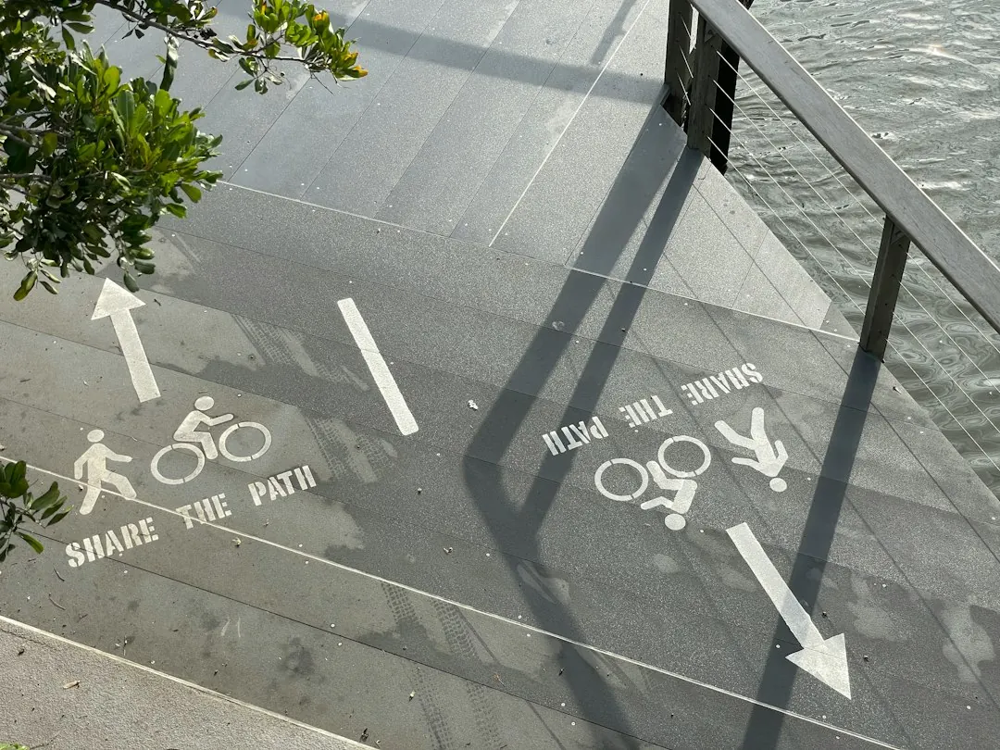

A low retaining wall no more than 1 m high, with no surcharge load and at least 1.5 m from a building or another retaining wall, generally needs no building approval. Installed concrete sleeper walls are published at about $300 per square metre for simple accessible work and $1,000+ for taller, engineered or difficult sites. Taller walls, combined fence heights over 2 m, drainage, excavation and engineering can change the scope and final quote.
For homeowners comparing retaining wall installers brisbane options, the practical decision comes down to wall height, soil loading, drainage, access, approvals and the detail included in each written quote.
Retaining Wall Installers Brisbane Explained
The Brisbane Sleeper Wall Installers guide describes concrete sleeper walls as steel-reinforced sleepers stacked between galvanised steel posts. Concrete does not rot and is not eaten by termites, while many manufacturers quote a design life of around 50 years. Those features make the system worth comparing when an old timber sleeper wall needs replacement, although the initial cost can be higher than treated pine.
Measure the rough length and height, then note what sits behind the wall. A garden bed or levelled lawn is a different design situation from a driveway, building, fence, pool area or another structure close to the retained soil. That extra weight is a surcharge load and can move the project outside the simple low-wall category.
- Record wall height from the lower ground level.
- Check access for excavation equipment, materials and spoil removal.
- Note nearby buildings, retaining walls, fences, easements and stormwater paths.
- Photograph steep slopes and narrow side paths before requesting a quote.
Approval and engineering questions
A wall, together with the soil it retains, that is no more than 1 m high, carries no surcharge load and sits at least 1.5 m from a building or another retaining wall generally needs no building approval. These conditions should be checked against the actual site rather than assumed from the visible face of the wall.
Outside those limits, the project needs building approval and usually a site-specific design. The published guidance identifies a Registered Professional Engineer of Queensland, or an engineer under that person's direct supervision, as the source of the design or certification. Queensland licensing rules also determine who may carry out work valued above $3,300.
Ask the installer or certifier to identify the approval pathway in writing. Useful questions include whether the wall is engineered, who will certify it, whether a building certifier is involved, and which drawings or design tables control post size and hole depth.
Drainage, posts and fence combinations
Drainage is part of the wall design, not an optional finishing detail. The guide describes a typical arrangement using slotted ag pipe at the base, free-draining gravel backfill and geotextile fabric. Water should be directed to a lawful point of discharge, not released onto a neighbour's land.
Common sleepers are described as 2.0 m or 2.4 m long, 200 mm high and about 75 to 80 mm thick, with steel reinforcement and often a strength rating of 40 MPa or more. The suitable post size and hole depth come from the manufacturer's design tables or an engineer, so a quote should identify the proposed system rather than simply state a wall area.
A fence on top creates another approval question. In Brisbane, fence and retaining wall heights count together, and a combined height over 2 m above natural ground needs building approval. Ask whether the quote includes the fence interface, post extensions, drainage changes and the finished ground level used for the calculation.
Reading an indicative cost properly
Published Brisbane price guides place installed concrete sleeper walls at around $300 per square metre of wall face for a simple, accessible low wall, rising to $1,000 or more per square metre for taller, engineered or hard-to-access work. These are indicative figures, not a fixed offer. Height, access, excavation, drainage, engineering and approvals can all change the price.
Compare itemised quotes on the same inputs. Look for the wall length and height, sleeper and post specifications, excavation, spoil removal, concrete, drainage pipe, gravel, geotextile fabric, engineering, approval work and reinstatement. If a quote only gives a square metre rate, ask which of those items are excluded.
Concrete sleepers trade a higher upfront cost against resistance to rot and termites. On a sloping block, the better comparison may be the complete installed scope, including excavation and drainage, rather than the sleeper price alone.
Who this guide applies to
This guide is for Brisbane property owners considering a residential concrete sleeper retaining wall, including a garden wall, terrace, levelled lawn or replacement for an old timber wall. It is also relevant where a taller or engineered wall may be needed, but it does not replace a site inspection, structural design, building approval or certification.
Before work starts, request a free Before You Dig Australia enquiry so underground electricity, gas, water and telecommunications assets can be identified. Then provide the installer with the measurements, access notes, site photographs and any information about fences, buildings, stormwater or easements.
Proceed only after reviewing the written scope and asking who is responsible for design, approvals, drainage and final ground levels. Where work is valued above $3,300, ask how Queensland licensing requirements apply to the person or business carrying it out.
- Describe the site. Provide the suburb, rough wall length and height, access constraints, slope, nearby structures and intended use of the retained area.
- Confirm the pathway. Ask whether the wall fits the low-wall conditions or needs engineering, building approval and certification before construction.
- Compare the written scope. Check sleeper and post specifications, drainage, excavation, spoil removal, approvals, reinstatement and any fence work before deciding.
| Scenario | Likely project pathway | Quote questions |
|---|---|---|
| Low garden or lawn wall | No more than 1 m, no surcharge load and at least 1.5 m from a building or another retaining wall generally needs no building approval. | Confirm height, distance, drainage and access. |
| Taller, loaded or constrained wall | Usually requires building approval and a site-specific design or certification. | Ask for the RPEQ design pathway, engineering, excavation and drainage inclusions. |
| Wall with a fence above | Fence and wall heights count together; a combined height over 2 m above natural ground needs approval. | Confirm finished ground level, fence details and approval responsibility. |
Common questions
What height generally avoids building approval? A wall and retained soil no more than 1 m high, with no surcharge load and at least 1.5 m from a building or another retaining wall, generally needs no building approval. Confirm the conditions against the actual site.
How much do concrete sleeper walls cost in Brisbane? Published guides indicate about $300 per square metre for a simple accessible low wall and $1,000 or more for taller, engineered or difficult-access work. Treat those figures as indicative and request an itemised quote.
When is engineering usually required? Walls outside the low-wall conditions generally need building approval and a site-specific design. The design or certification is identified as coming from an RPEQ or someone under direct supervision.
What drainage should a quote include? Ask whether it includes slotted ag pipe, free-draining gravel backfill, geotextile fabric and a lawful discharge point. Water should not be directed onto a neighbour's land.
This guide covers Brisbane concrete sleeper retaining wall planning, costs, drainage, approvals and quote comparison.